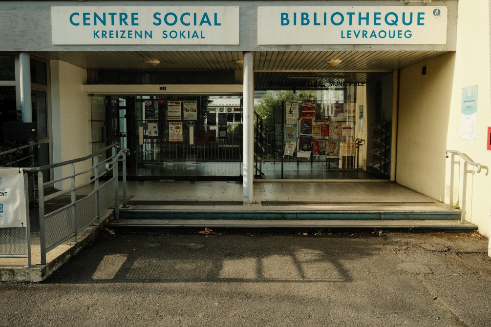
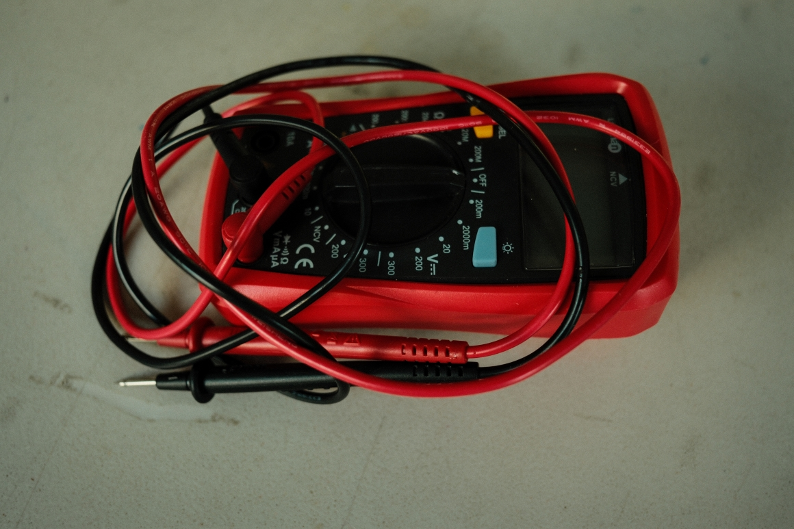
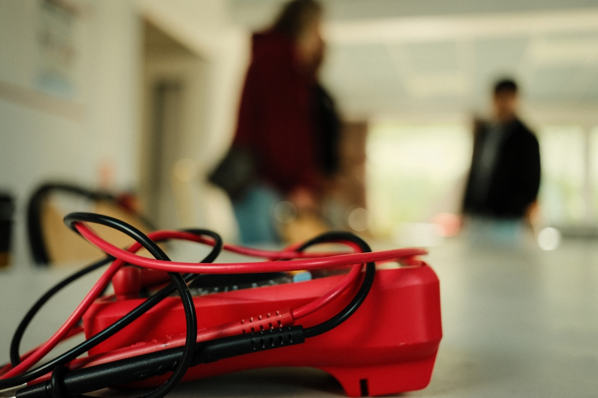
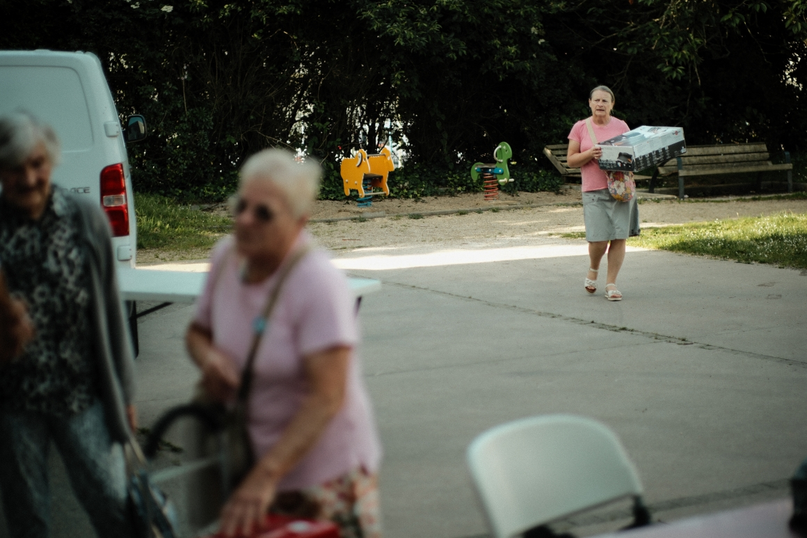
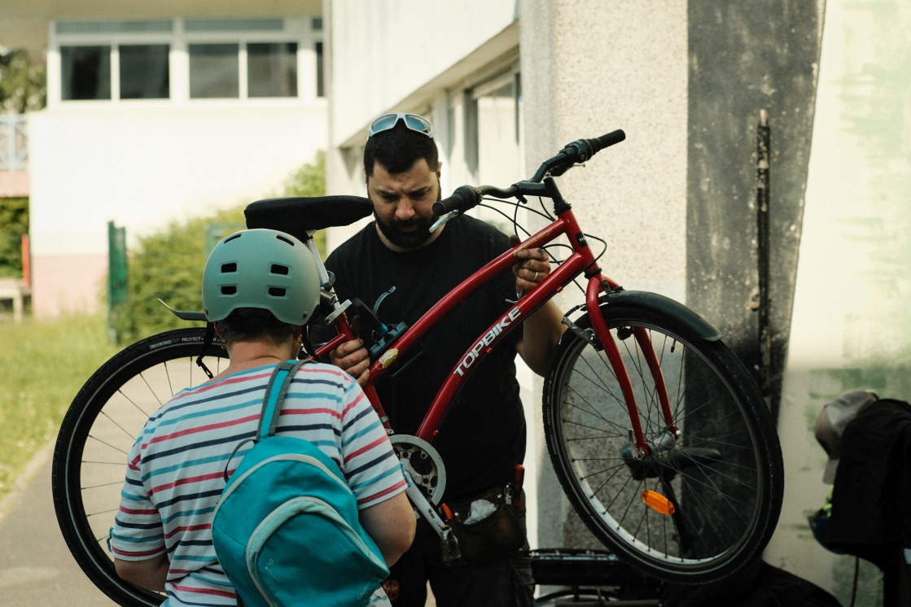
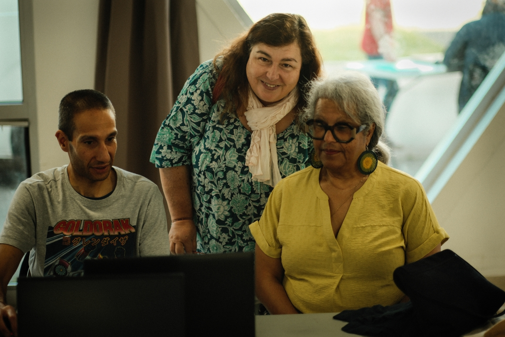
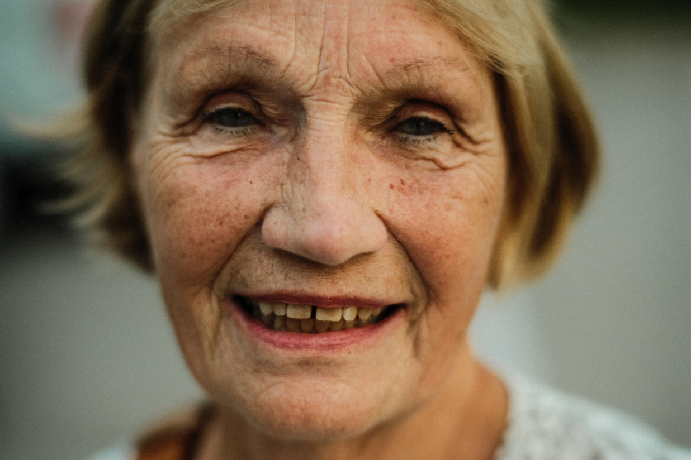
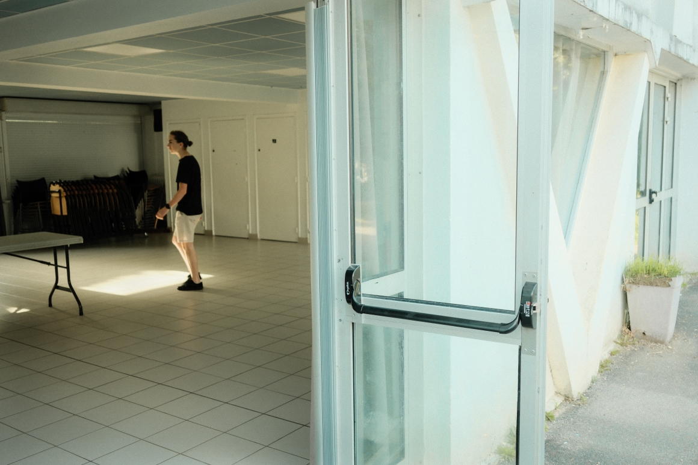
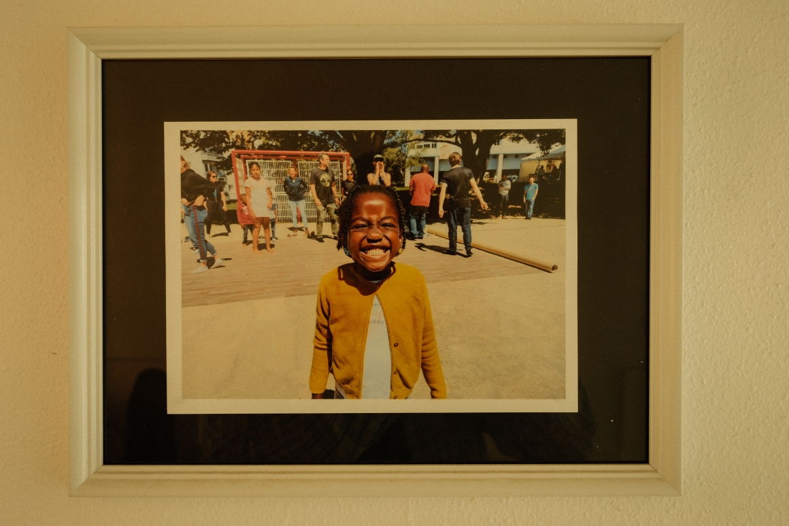
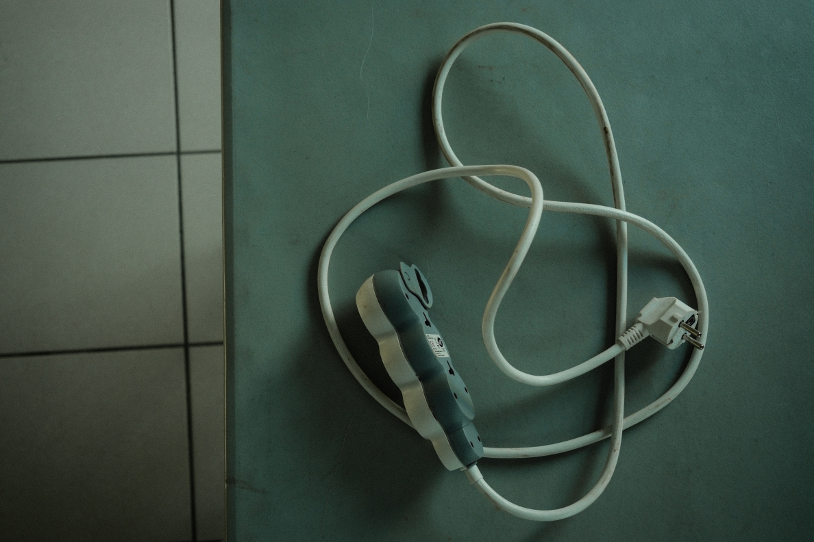

Keryado
Keryado is a long-term documentary project developed at Centre Social Keryado in Lorient. Through repair, shared activities and everyday encounters, the project explores how solidarity takes shape in everyday community life.









